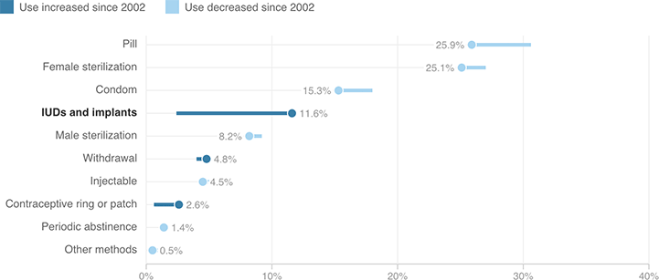

Use Of IUDs And Other Implants Has Risen Since 2002; Other Methods See Reduced Use
Relative popularity of various contraceptive methods among women 15 to 44 years old who use contraception (2002 vs. 2011-2013)
Use increased since 2002
Use decreased since 2002

Notes
Percentages may not add up to 100 due to rounding.